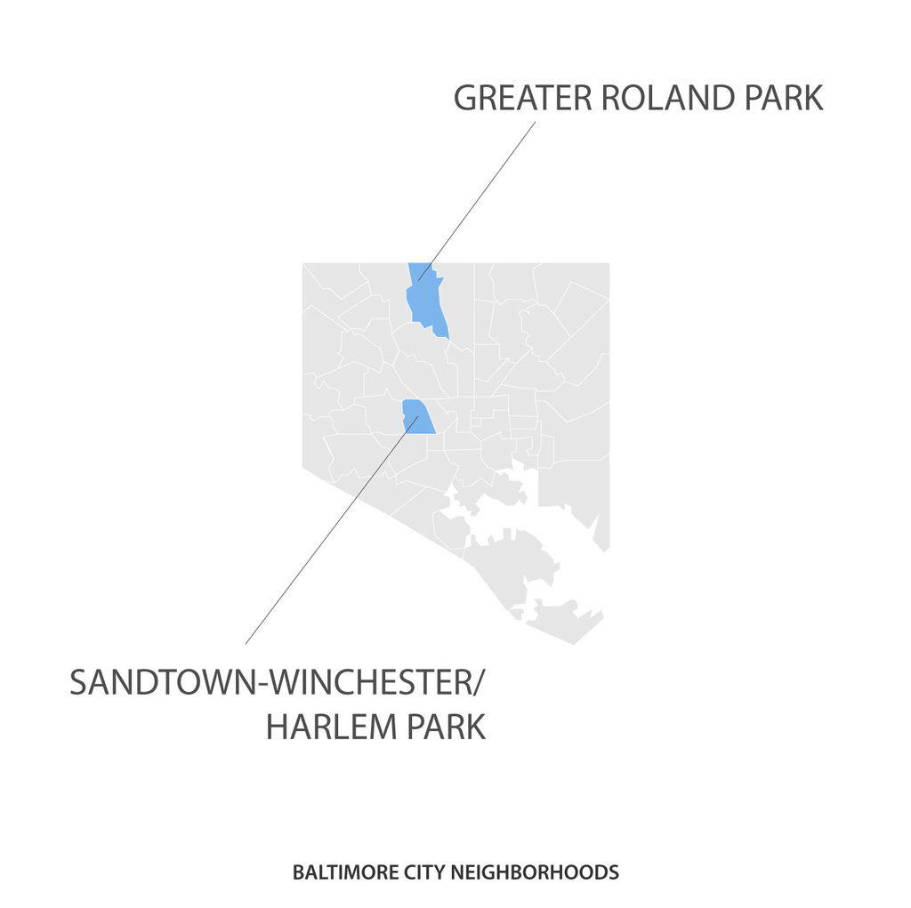

In Freddie Gray's Neighborhood,
a Hard Life for Residents
a Hard Life for Residents
Baltimore's Sandtown-Winchester neighborhood -- where Freddie Gray grew up, was arrested, and where protests erupted following his death in police custody -- is a hard place to grow up. The West Baltimore neighborhood has one of the lowest median incomes in the city, with almost a quarter of its residents unemployed. On average, people's lives in Sandtown are 15 years shorter than the residents of Roland Park, Baltimore's wealthiest community.
Click on the buttons below to see how Sandtown compares to Roland Park and the rest of the city.

Click on the buttons below to see how Sandtown compares to Roland Park and the rest of the city.